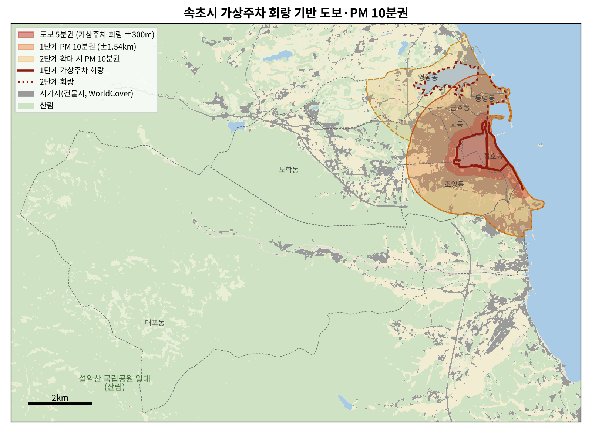
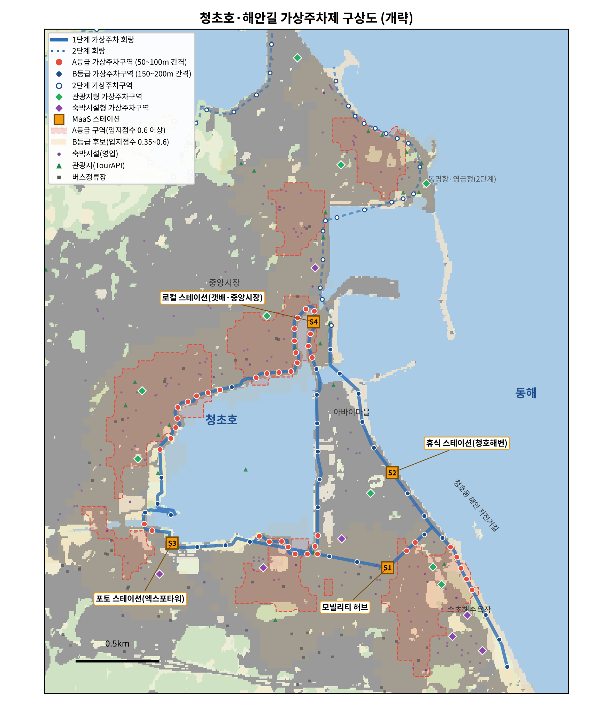

핵심 제안 「속초형 MaaS 관광 라스트마일 스테이션」(물리 거점)에 가상주차구역(앱 상 반납 거점)을 결합해, 관광객이 많고 민원 위험이 큰 청초호·해안길 회랑에 한정하여 “지정된 곳에서만 반납”하는 주차질서를 먼저 확보
PM 활용 범위 1단계 회랑(8.8km) 기준 PM 10분권이 속초 시가지(건물지)의 60%를 포괄(2단계 확대 시 67%). 시 전체 면적 대비로는 12.5%에 그치나, 이는 산림이 71%를 차지하는 지형 때문
입지 선정 숙박시설(40%)·관광지(30%)·버스정류장(30%) 밀도로 핵심구역을 정하고, 관광지·호텔급 숙박시설에 거점형 구역 추가 → 1단계 87개 구역, 속초 숙박시설의 44%가 도보 5분 내
맹점과 대응 공유 킥보드 약 100대 수준으로 킥보드 단독 실증은 표본이 부족 → 공유자전거를 포함하고, 해안 자전거길 레저 수요를 1차 타깃으로 설계
교수님 구상(「속초형 MaaS 기반 관광 라스트마일 스테이션 구축 및 서비스 실증」)은 광역교통 거점–스테이션–관광지를 공유자전거·PM으로 연결하여 이동 자체를 관광상품화하는 모델
1단계로 고속버스터미널–속초해수욕장–청초호 구간 실증, 2단계로 아바이마을·중앙시장·영랑호 확대 제안
다만 스테이션만 조성하고 반납을 자유롭게 두면, 관광객 밀집 구간에 기기가 무질서하게 방치되어 보행 불편 민원 → PM 부정 인식 → 사업 지속성 훼손으로 이어질 우려
관광지는 보행 밀도가 높고 이용자 대부분이 단기 방문객이라 지역 주차 규칙을 모름 → 현장에서 즉시 행동을 교정하는 장치가 필요
가변가상주차제는 지오펜싱·GPS와 운영사 앱을 활용해 지정된 가상 주차구역에서만 반납되도록 하는 방식으로, 물리 시설 없이 주차질서 확보 가능
(대구 달성군) 테크노폴리스 시행 후 평균 주차 준수율 약 85% / (수원 영통) 무단주차 184대 → 9대 / (서울 강남) 첫 3주 PM 민원 61.3% 감소 ※ 빔모빌리티코리아, 「가변가상주차제 관련」(26.11.13.)
다만 시 전역 적용은 현실적이지 않음 → 민원·유동인구가 집중되는 관광지·상업지구에 한정하고, 그 외 지역은 기존 반납 방식(금지구역만 설정)을 유지하는 구역 한정형으로 제안
| 구분 | 현황 | 시사점 |
|---|---|---|
| 토지 구성 | 행정구역 106.8㎢ 중 산림 75.7㎢(70.9%), 시가지(건물지) 12.3㎢(11.5%) | PM이 실제 쓰일 공간은 동측 해안 시가지에 집중 → 시 전체 면적은 의미 있는 분모가 아님 |
| 도시계획 | 도시지역 42.1㎢(주거 6.3㎢·상업 2.3㎢), 인구 79,636명('25) | 상업지역이 작고 집약적 → 가상주차 시범구역 설정에 유리 |
| 공유 킥보드 | 약 100대('26.7월 기준) | 킥보드 단독으로는 실증 표본·이용 밀도 부족 |
| 공유자전거 | '24년 말 민영 공유자전거 운영 확인. 운영사·대수는 추가 확인 필요 | 자전거 포함 시 표본 확보 가능. 운영사 참여 의사 확인이 선결과제 |
| 이용 실적 | '24년 말 공유PM 앱 기반 이용 실적이 전국 최상위 지역의 약 0.2% 수준 | PM 이용 문화 형성 전 단계 → 지금 규칙을 정하는 것이 사후 규제보다 저비용 |
| 자치법규 | 「속초시 개인형 이동장치 이용안전 증진 조례」 有, 조례상 이동조치 규정 無, 견인료(PM) 2만원 | 무단주차 대응 수단이 견인 위주 → 가상주차제로 사전 예방 보완 |
| 자전거 인프라 | 청호동~속초해수욕장 해안 자전거도로 연속 구간(현장 확인) | 레저형 자전거 수요 존재. 단, 해안측 보도 협소 |
| 숙박시설 | 영업 중 376곳(숙박업 233·농어촌민박 77·관광숙박업 36·외국인관광 도시민박 23 등), 이 중 호텔·콘도·호스텔급 48곳 | 해수욕장·청초호 서측(교동)·중앙시장·동명항에 밀집 → 투숙객의 숙소 앞 반납 수요 발생 지점 |
| 관광지 | TourAPI 등록 관광지·문화시설·레포츠 100곳(설악산 일대 포함) | 도심 관광지는 해안·청초호 주변에 집중 |
출처: 토지 구성 – ESA WorldCover 2021(10m) 및 행정동 경계(vuski/admdongkor, ver20261001)로 작성자 산출 / 도시계획 – 국토부 도시계획현황(UPIS) 2025 / 공유자전거·이용 실적 – 국토교통부 「2025년 첨단모빌리티 현황조사」('24년 말 기준, 이용 횟수는 기간 단위 미표기로 지역 간 상대 비교만 유효) / 킥보드 대수 – 작성자 파악 수치 / 조례 – 자치법규정보시스템 조사 / 숙박시설 – 행정안전부 숙박 인허가 8종(한국 숙박업 대시보드 가공자료, '26.11.02 기준) / 관광지 – 한국관광공사 TourAPI('26.11.02)
속초의 맹점: 기기 100대
PM 10분권 시가지(7.4㎢) 기준 기기 밀도 약 13.5대/㎢. 비교: 부산 수영구(광안리 해변 관광권) 849대/10.7㎢ ≈ 79대/㎢('25.11) → 속초는 약 1/6 수준
밀도가 낮으면 이용자가 근처에서 기기를 찾기 어렵고 운영사의 구역 설정 투자 유인도 낮음 → 킥보드만으로는 실증 효과 검증이 곤란
대응: ① 공유자전거(전기자전거 포함)를 대상에 포함 ② 해안 자전거길 레저 수요를 1차 타깃 ③ 성수기(7~8월) 한시 증차를 운영사 참여 조건으로 협의
분석 방법: 1단계 가상주차 회랑(해안길·청초호 둘레·엑스포공원–터미널, 총 8.8km)에서 도보·PM으로 도달 가능한 범위를 산출하여 시 면적·시가지 면적 대비 비중 계산
| 구분 | 이동 가정 | 직선 환산 반경 |
|---|---|---|
| 도보 5분권 | 보행 80m/분 × 5분 = 400m, 우회계수 1.3 | 300m |
| PM 5분권 | PM 평균 12km/h(신호·감속 포함, 법정 최고속도 25km/h의 약 절반), 우회계수 1.3 | 770m |
| PM 10분권 | 1.54km |

<회랑 기반 도달권 면적 비중>
| 구분 | 1단계 (청초호·해안길 8.8km) | 2단계 (+동명항·영랑호, 누적 18.5km) | ||||
|---|---|---|---|---|---|---|
| 면적 | 시 면적 대비 | 시가지 대비 | 면적 | 시 면적 대비 | 시가지 대비 | |
| 도보 5분권 | 3.2㎢ | 3.0% | 16.4% | 7.0㎢ | 6.5% | 26.2% |
| PM 5분권 | 6.6㎢ | 6.2% | 36.9% | 12.2㎢ | 11.4% | 51.1% |
| PM 10분권 | 13.4㎢ | 12.5% | 60.4% | 18.7㎢ | 17.5% | 66.9% |
시 면적 106.8㎢, 시가지(WorldCover 건물지) 12.3㎢ 기준. 인구 분포 자료 대신 건물지 면적을 대리지표로 사용
<행정동별 시가지의 PM 10분권 포함 비율>
| 행정동 | 면적 | 시가지 | 도보 5분권(1단계) | PM 10분권(1단계) | PM 10분권(2단계) | 비고 |
|---|---|---|---|---|---|---|
| 청호동 | 1.6㎢ | 0.84㎢ | 89% | 100% | 100% | 아바이마을·해안길 |
| 교동 | 0.8㎢ | 0.73㎢ | 33% | 100% | 100% | |
| 동명동 | 0.8㎢ | 0.62㎢ | 3% | 100% | 100% | 동명항·영금정 |
| 조양동 | 5.7㎢ | 1.92㎢ | 26% | 98% | 98% | 터미널·해수욕장·엑스포공원 |
| 금호동 | 1.4㎢ | 0.69㎢ | 38% | 97% | 100% | 중앙시장 일대 |
| 노학동 | 20.4㎢ | 3.69㎢ | 4% | 41% | 45% | 서부 주거지, 시가지 최대 |
| 영랑동 | 7.8㎢ | 1.39㎢ | 0% | 32% | 78% | 2단계 효과 최대 |
| 대포동 | 68.3㎢ | 2.39㎢ | 4% | 30% | 30% | 대포항·설악동, 산림 대부분 |
해석
관광 회랑 하나로 시가지 10곳 중 6곳이 PM 10분권에 들어옴 → 속초에서 PM은 “시 전역 교통수단”이 아니라 도심–해안 관광권역의 라스트마일 수단으로 활용 가능성이 높음
도보 5분권(반납 지점 접근 가능 범위)은 시가지의 16%로 의도적으로 좁음 → 가상주차구역은 관광·상권에 집중하고, 회랑 밖 목적지는 “회랑에서 출발하여 PM으로 10분” 구조로 연결
사각지대는 노학동(서부 주거지)·대포동(대포항·설악동)·영랑동. 영랑동은 2단계(영랑호)에서 32%→78%로 개선되나, 노학동·대포동은 관광 회랑으로 해결되지 않으며 주민 생활 수요는 별도 과제
분석 한계: 직선거리 기반(실제 도로망·경사 미반영), 인구 대신 건물지 면적 사용. 실증 전 도로망 기반 재산출 필요
가상주차구역은 PM을 실제로 빌리고 반납하는 지점에 있어야 함 → 관광객의 출발·도착점인 ① 숙박시설 ② 관광지 ③ 버스정류장(광역·시내 환승)의 밀도로 등급을 정함
| 지표 | 산출 | 가중치 | 근거 |
|---|---|---|---|
| 숙박시설 밀도 | 반경 300m 내 영업 숙박시설 수 (상한 15곳) | 0.4 | 관광객 이동의 시작과 끝. 체류형 관광지 속초의 핵심 수요 |
| 관광지 밀도 | 반경 300m 내 TourAPI 관광지 수 (상한 4곳) | 0.3 | 방문·체류 지점, 혼잡·민원 발생 지점 |
| 버스정류장 밀도 | 반경 300m 내 버스정류장 수 (상한 6곳) | 0.3 | 버스 하차 후 라스트마일 연결 지점 |
50m 격자로 계산, 각 지표를 상한(상위 5% 값)으로 나눠 0~1로 표준화한 뒤 가중합. 입지점수 0.6 이상 = A등급, 0.35~0.6 = B등급 후보. 가중치는 작성자 설정으로, 숙박 비중을 높인 것은 속초가 숙박 체류형 관광지이기 때문. 버스정류장은 OSM 좌표(시내 96곳)를 사용했으며, 교통카드 기준 정류장(195곳)보다 적어 버스 지표가 과소평가되었을 수 있음
<데이터로 도출한 A등급 핵심구역>
| 구역 | 면적 | 숙박 | 관광지 | 정류장 | 회랑 | 비고 |
|---|---|---|---|---|---|---|
| 교동·청초호 서측(서점거리·호수공원) | 32ha | 20 | 6 | 5 | 1단계 | 최대 핵심구역. 당초 가정에 없던 곳 |
| 속초해수욕장·대관람차 | 26ha | 25 | 3 | 2 | 1단계 | 숙박 최다 밀집 |
| 갯배·중앙시장(닭전골목) | 20ha | 15 | 1 | 4 | 1단계 | 상권 진입부 |
| 조양동(엑스포–터미널 연결로) | 14ha | 8 | 0 | 2 | 1단계 | 숙박·정류장 혼합 |
| 엑스포타워 서측 | 7ha | 6 | 0 | 0 | 1단계 | |
| 동명항·영금정·등대전망대 | 14ha | 11 | 2 | 0 | 2단계 | |
| 시외버스터미널·속초항 | 11ha | 12 | 0 | 2 | 2단계 | 광역교통 거점 |
| 설악동(설악산 입구) 일대 | 10ha | 8 | 0 | 4 | 미포함 | 회랑에서 5km 이상, 오르막 → PM 부적합, 셔틀 연계 대상 |
시사점
당초 상정한 4곳(터미널·해수욕장, 아바이마을, 중앙시장, 엑스포공원) 외에 교동·청초호 서측이 숙박·관광·정류장이 모두 겹치는 최대 핵심구역으로 나타남 → A등급으로 편입
반대로 아바이마을은 관광 수요는 크지만 숙박·정류장이 적어 A등급에 들지 않음 → 면 단위 A등급 대신 아래 '관광지형' 거점으로 반영
숙박시설·관광지 거점 추가: 회랑 도보권(300m) 안에 있지만 100m 안에 회랑 구역이 없는 곳에 1개씩 추가
관광지형 7곳(1단계): 닭전골목, 속초해수욕장, 아바이벽화마을, 외옹치해변, 문우당서림, 국민여가캠핑장, 여로요가 / 2단계 5곳: 영금정, 동명동성당, 뮤지엄엑스, 속초해안로, 영랑호리조트
숙박시설형 7곳(1단계, 호텔·콘도·호스텔급 대상): 미르관광호텔, 브루클린호텔, 속초비치호스텔, 스테이호스텔, 스테이오레, 더 티(the T), 소소 / 2단계 1곳(영랑호리조트)
<가상주차구역 도보 5분(300m) 내 시설 비율>
| 구분 | 속초시 전체 | 1단계 도보 5분 | 2단계 도보 5분 | 1단계 PM 10분 | 2단계 PM 10분 |
|---|---|---|---|---|---|
| 숙박시설(영업) | 358 | 158 (44%) | 213 (59%) | 238 (66%) | 257 (72%) |
| 호텔·콘도·호스텔급 | 48 | 12 (25%) | 17 (35%) | 24 (50%) | 26 (54%) |
| 관광지(TourAPI) | 100 | 22 (22%) | 42 (42%) | 49 (49%) | 58 (58%) |
| 버스정류장(OSM) | 96 | 27 (28%) | 27 (28%) | 60 (63%) | 60 (63%) |
숙박시설은 좌표가 있는 영업 시설 358곳 기준(영업 376곳 중 좌표 없음·동 중심 대체 18곳 제외). 호텔급은 관광호텔·가족호텔·소형호텔·호스텔·휴양콘도·일반호텔. 관광지·호텔급 비율이 낮은 것은 설악산 일대(설악동)에 다수가 있기 때문
1단계만으로 속초 숙박시설의 44%가 가상주차구역 도보 5분 내, 66%가 PM 10분 내 → 숙박 수요 측면의 커버리지는 충분
호텔·콘도급은 설악동·영랑호·외옹치에 분산되어 있어 25%에 그침 → 대형 숙박시설은 숙박시설형(부지 내 지정, 사업자 협약)으로 개별 확장
적용 원칙: 시범구역 내부는 지정 가상주차구역에서만 반납 허용, 외부는 기존 반납 방식 유지(금지구역만 설정)
<구역 등급별 지정 간격>
| 등급 | 대상 | 간격 | 지정 방식 |
|---|---|---|---|
| A 핵심 관광·상권 | 입지점수 0.6 이상 구역(4장 표: 교동·청초호 서측, 속초해수욕장, 갯배·중앙시장, 조양동, 엑스포타워 서측 등) | 50~100m | MaaS 스테이션 + 보도형·주차면 전환형. 보행 밀도가 높아 도보 1분 내 반납 가능하도록 촘촘하게 |
| B 레저 회랑 | 청호동 해안 자전거길, 청초호 둘레 중 A등급 외 구간 | 150~200m | 해안측 보도 협소 → 주차면 전환형·빗금구역형 우선. 보도폭이 넓은 구간만 보도형 |
| 거점 | 회랑 도보권 내 관광지·호텔급 숙박시설 | 시설당 1개 | 관광지형·숙박시설형(아래 ⑤·⑥) |
| C 일반 | 그 외 시가지 | 지정 없음 | 기존 반납 방식 + 반납 금지구역(횡단보도·버스정류장 등)만 설정 |
<가상주차구역 지정 유형>
| 유형 | 적용 공간 | 수용(추정) | 협의·유의사항 |
|---|---|---|---|
| ① 보도형 | 보도폭이 넓은 구간의 지장물(가로등·가로수·볼라드 등) 사이 유휴공간 | 3~5대 | 설치 후 잔여 보도 유효폭 2.0m 이상 확보(「도로의 구조·시설 기준에 관한 규칙」 보도 유효폭 기준 준용) |
| ② 주차면 전환형 | 노상·노외 공영주차장의 차량 주차면 1면을 PM·자전거 주차구역으로 전환 | 킥보드 8~10대 또는 자전거 5~6대 | 주차면 감소에 따른 상인 반발 → 차량 1면 대비 회전율·방문객 수 논리로 설득. 시 주차관리 부서 협의 |
| ③ 빗금구역형 | 차량 주정차를 막기 위해 빗금 노면표시를 해 둔 구역(현장사진 2) | 구역 길이에 비례 | 노면표시는 교통안전시설로 경찰 협의 필수. 횡단보도 인접부는 시야 확보 목적이므로 횡단보도 3m 이내 제외 |
| ④ 스테이션형 | MaaS 스테이션 내 거치·충전 공간 | 10~20대 | 스테이션 조성과 동시 지정. 가상주차와 물리 거치대 병행 |
| ⑤ 숙박시설형 | 호텔·콘도·호스텔 부지 내 주차장 1면 또는 건물 전면 공지 | 3~10대 | 사유지이므로 숙박사업자 협약 필요. 투숙객 전용 할인·체크인 안내 연계로 참여 유인 제공 |
| ⑥ 관광지형 | 관광지 공영주차장 1면, 입구 광장·공원 가장자리 | 5~10대 | 관광지 관리부서 협의. 입구 동선과 포토존 앞은 피하고 주차장 측에 배치 |
수용 대수는 표준 주차면(2.5m×5.0m)에 킥보드(약 0.6m×1.2m)·자전거(약 0.6m×1.8m)를 배치한 작성자 추정치로, 현장 실측 후 확정 필요
지정 금지 기준(지자체 가이드라인 예시): 횡단보도 3m 이내, 버스정류장, 점자블록 위, 소화전 주변, 건물·상가 출입구 전면, 잔여 보도 유효폭 2.0m 미확보 구간

개략도: 회랑은 위성 토지피복 자료로 추출한 해안선·호안선 기준. A등급 경계는 4장의 입지점수로 산출했고, 구역 위치는 지정 간격 규칙을 적용한 예시. 실제 지점은 현장 조사(보도폭·지장물·주차면)로 확정
<구간별 가상주차구역 배치(안)>
| 단계 | 구간 | 연장 | 등급 | 구역 수(A/B) | 주 지정 유형 |
|---|---|---|---|---|---|
| 1단계 | 속초해수욕장–청호동 해안길–아바이마을 | 2.4km | A·B | 17 (5/12) | 해수욕장 구간 A(보도형·주차면 전환), 해안길 B(빗금구역·주차면 전환) |
| 청초호 둘레(교동·갯배·엑스포타워 포함) | 5.2km | A·B | 49 (34/15) | 교동·중앙시장 측 A(보도형), 청호동 측 B | |
| 청초호 남측–고속버스터미널 연결 | 1.2km | A·B | 11 (6/5) | 터미널 모빌리티 허브(스테이션형) | |
| 관광지형 거점 | - | 거점 | 7 | 닭전골목·아바이벽화마을·외옹치해변 등 | |
| 숙박시설형 거점 | - | 거점 | 7 | 관광호텔·호스텔 등 7곳 | |
| 1단계 계(중복 제거) | 8.8km | 87 (A 42/B 31/거점 14) | 도보 5분권 3.2㎢ 기준 약 27개/㎢ | ||
| 2단계 | 설악대교 북측–동명항–영금정 | 2.3km | A·B | 20 (11/9) | 시외버스터미널·동명항 A, 항구·관광지 주차장 면 전환 |
| 영랑호 둘레 | 7.4km | B | 42 | 호안 산책로 보도형 | |
| 관광지형·숙박시설형 거점 | - | 거점 | 6 | 영금정·동명동성당·영랑호리조트 등 | |
구간별 수는 구간 단독 산출값이며, 구간이 만나는 지점의 중복(40m 이내)을 제거해 1단계 회랑 계 73개
1단계 87개는 빔모빌리티 자료가 인용한 적정 밀도(1㎢당 20~30개)의 범위 안. 기기 100대 대비 구역이 많아 보이나, 가상주차구역은 비용이 들지 않으며 반납 지점까지의 거리가 준수율을 좌우하므로 밀도를 낮추지 않는 것이 맞음
운영 초기에는 A등급 42개와 거점 14개를 우선 활성화하고, B등급은 이용 데이터를 보고 단계적으로 활성화하는 방식도 가능(“가변” 운영)
| 번호 | 위치 | 스테이션 유형(교수님안) | 가상주차 연계 기능 |
|---|---|---|---|
| S1 | 고속버스터미널 인근 | A. 모빌리티 허브 | 광역교통 하차 → 대여 출발점. 가장 큰 반납 거점, 성수기 재배치 기지 |
| S2 | 청호해변(해안 자전거길 중간) | B. 휴식 스테이션 | 레저 라이딩 중간 반납·휴식. 해안측 보도 협소 구간을 스테이션 부지로 해소 |
| S3 | 엑스포타워(청초호 남서측) | C. 포토 스테이션 | 청초호 둘레 라이딩 시작·종료점. 포토존 방문 인증과 반납 인센티브 결합 |
| S4 | 갯배 선착장·중앙시장 일대 | D. 로컬 스테이션 | 상권 진입 전 반납 유도 → 시장 골목 내 기기 진입 차단, 쿠폰·스탬프 연계 |
스테이션은 “가고 싶은 장소”, 가상주차구역은 “반납 질서”를 담당 → 지정 구역 반납 시 스탬프·할인 등 보상형 인센티브를 MaaS 앱에서 제공하면 규제가 아닌 관광 경험으로 인식
| 주체 | 역할 | 세부 내용 |
|---|---|---|
| 속초시 | 기준 수립·점검 | 가상주차구역 지정 가이드라인 마련, 운영사 제안 구역 검토·확정, 반복 민원 지점 시정 권고, 주차면 전환·노면표시 관련 부서 간 조정 |
| 운영사 (킥보드·자전거 전체) | 구역 설정·운영 관리 | 가이드라인에 따른 구역 제안·지오펜스 설정, 구역 외 반납 차단 및 앱 안내, 성수기 증차·재배치, 데이터 공유 |
| 경찰서 | 교통안전 협의 | 빗금구역·노면표시 활용 및 횡단보도 인접부 협의 |
| 상인회·주민 | 입지 의견 제시 | 주차면 전환 위치 협의, 상가 출입구 회피 요청, 민원 모니터링 |
| 숙박사업자 (호텔·콘도·호스텔) | 숙박시설형 구역 제공 | 부지 내 구역 제공, 투숙객 안내(체크인 시 반납 구역 안내), 투숙객 할인 쿠폰 연계 |
| 관광지 관리부서 | 관광지형 구역 지정 | 관광지 공영주차장·입구 공간 제공, 혼잡 시간대 구역 조정 |
관내 모든 대여업체(킥보드·자전거) 동시 참여가 전제 → 일부 업체만 참여하면 해당 업체만 이용 불편·매출 손실을 떠안고, 거리의 무질서는 개선되지 않음
“가변” 운영: 해수욕장 성수기(7~8월)·축제·해맞이 등 행사 시 A등급 구역 확대·간격 축소, 비수기에는 B등급 일부 비활성화. 물리 시설이 없으므로 앱 설정만으로 조정 가능
| 단계 | 내용 | 성과지표(안) |
|---|---|---|
| 준비 | 현장 조사(보도폭·지장물·주차면·빗금구역), 운영사 참여 협약, 경찰 협의, 가이드라인 확정 | 시범구역 확정, 참여 운영사 수(킥보드+자전거 전체) |
| 1단계 성수기 실증 | 청초호·해안길 87개 구역(거점 14개 포함) + 스테이션 S1~S4. 7~8월 성수기 집중 운영 | 지정구역 반납 준수율 85% 이상(대구 달성 사례 수준), 시범구역 PM 민원 전년 대비 감소율, 숙박시설 도보 5분 내 구역 비율 44%, 스테이션 이용률 |
| 2단계 | 동명항·영금정·영랑호 확대(+68개) | 시가지 PM 10분권 67%, 숙박시설 도보 5분 내 59%, 신규 방문지 수·체류시간 |
| 3단계 | 고성·양양 등 동해안 관광권 확산(교수님안) | 광역 MaaS 연계 이용 건수 |
교수님안과 동일하게, 실증 참여자와 비교집단(비시범구역)의 주차 행태·민원 변화를 비교하여 가상주차제의 순수효과를 검증
| 리스크 | 수준 | 대응 |
|---|---|---|
| 경찰의 제도화 반대(대구 규제샌드박스 사례) | 높음 | 법령 개정이 필요 없는 운영사 자율 + 시 가이드라인 방식으로 시작(강남구 사례). 빗금구역은 경찰 협의 지점만 선별 |
| 기기 100대로 효과 미미 | 높음 | 공유자전거 포함, 성수기 한시 증차를 참여 조건으로 협의, 성과는 준수율·민원 등 비율 지표 중심 |
| 주차면 전환 시 상인 반발 | 중간 | 상가 전면 회피, 공영주차장 끝면 우선 활용, 방문객 유입 데이터 공유 |
| 일부 운영사만 참여 | 중간 | 시가 주도하여 전 운영사 동시 협약, 미참여 시 시범구역 내 운영 제한 협의 |
| 해안 GPS 오차·염분·강풍 | 중간 | 구역 반경을 여유 있게 설정(관광지 GPS 오차 고려), 강풍 시 전도 방지형 위치(방풍벽 측) 우선 |
| 계절 수요 편차 | 중간 | “가변” 운영으로 비수기 구역 축소, 성수기 재배치 계획 사전 수립 |
| 숙박사업자 협약 지연(사유지) | 중간 | 숙박시설형은 협약된 곳부터 순차 지정, 미협약 시 건물 전면 공공보도(보도형)로 대체 |
스테이션(교수님안) + 가상주차구역(본 제안)을 한 세트로 제안. 스테이션만으로는 반납 질서를 담보할 수 없고, 관광지에서 발생한 무단주차 민원은 사업 전체의 인식을 좌우함
적용 범위는 청초호·해안길 회랑 8.8km, 87개 구역으로 한정. 숙박·관광지·버스정류장 밀도로 정한 A등급 50~100m, 레저 회랑(B) 150~200m, 관광지·호텔급 숙박시설에 거점 14개, 그 외 지역은 미적용
숙박시설과 관광지가 반납 거점: 1단계만으로 속초 숙박시설의 44%가 구역 도보 5분 내. 데이터상 최대 핵심구역은 교동·청초호 서측으로, 당초 가정보다 서쪽까지 A등급을 넓혀야 함
PM 활용 범위는 충분: 이 회랑만으로 속초 시가지의 60%가 PM 10분권. 제약은 공간이 아니라 기기 수(100대)이므로 공유자전거 포함과 성수기 증차가 실증 성패를 결정
우선순위: ① 공유자전거 운영사 참여 확인 → ② 현장 조사로 A등급 42개·거점 14개 지점 확정(숙박사업자 협약 병행) → ③ 경찰 협의(빗금구역) → ④ '27년 7~8월 성수기 실증